長野3大都市サイクリングページ
サイクリングの経緯について
- 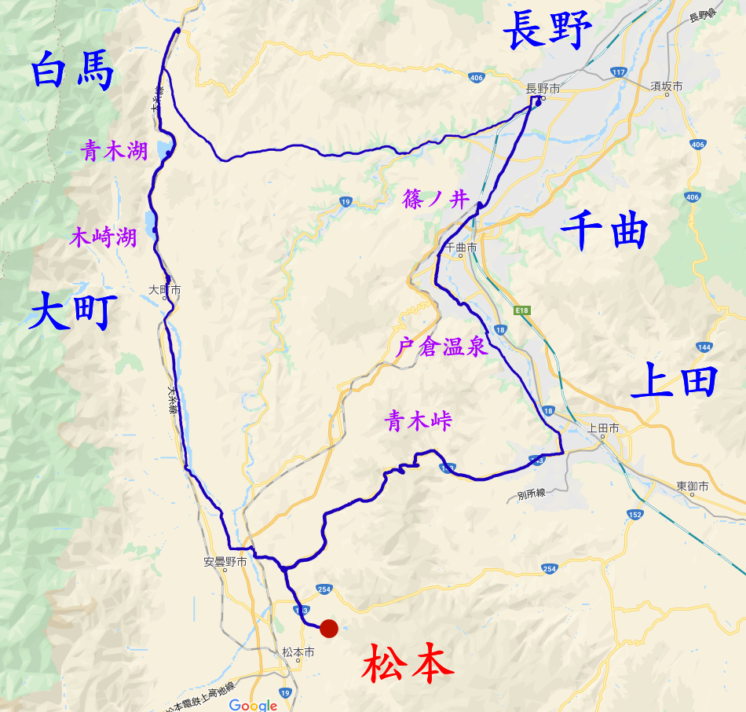
- ↑松本-美ヶ原-諏訪-松本の経路
今回は，友達と行く，2回目のサイクリングということで，2回目かつ日帰りにしては，最長の190kmをサイクリングとして走破した結果となった。主に行ったところは，松本から大町，白馬，長野，千曲，上田，となっており，長野県の三大都市，長野，松本，上田のすべてを制覇したこととなるのである。幸い，私としても長野と上田には行ったことがなかったので，大変楽しみな回であった。また，これだけ多くの場所に寄ったので，今回は，写真の枚数も多くなっている。
5/30 【190km】 松本→大町→白馬→長野→上田→松本
松本→大町
- 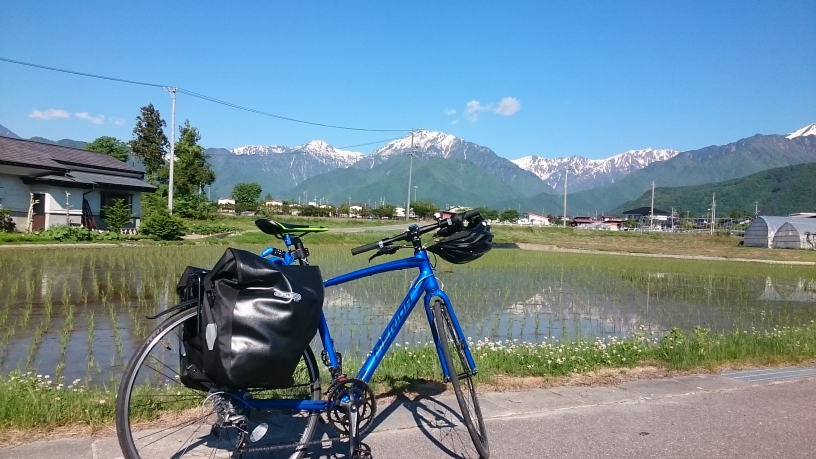
- ↑度々挙げている 長野県大町市 の写真
出発したのは，早朝5:30であった。今回は，私としても初めての大町・白馬方面，長野に行けるとのことであり，(当初は上田を予定していなかった)実にわくわくしていたものである。また，白馬までが，約60km長野までも松本からだと約60kmあり，白馬から長野間においても，約45kmほどの距離があったことから，早朝の5時に出発するよう計画を立てた。最初は，松本市から北上していったのであるが，塩尻方面に行くのとは違って，緑豊かな山の方へと向かっていくため，新鮮な体験ができた。国道でいうと，143号線を軽油し，そこから，JR篠ノ井線や国道19号の方へと合流。そのまま安曇野方面へと左折していくのであるが，山を切り抜けて見える北アルプスの山々は実に絶景であった。ヨーロッパのスイスのようなイメージを連想させるその風景は，ヨーロッパのアルプス山脈の日本版といえるだけのことあって，大変見事なものであった。そのまま，安曇野アートラインを抜けて，大町へと入るのであるが，この大町というのは，日本でも最大級の規模を誇る黒部ダムへと行くことのできる扇沢駅への最寄り駅として，信濃大町駅は知られており，また，長野の仁科三湖があることと，温泉の地としても，大町は有名なのである。
仁科三湖
- 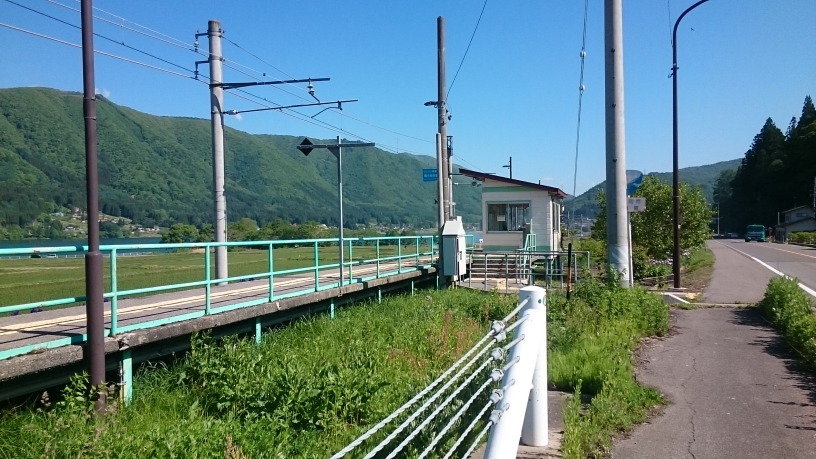
- ↑稲尾駅
- 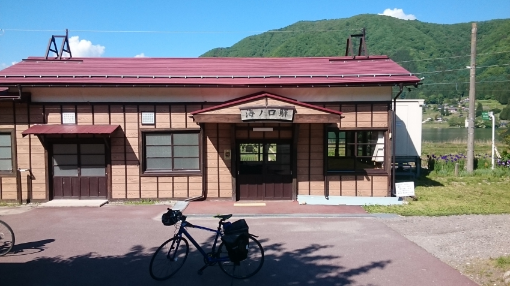
- ↑海ノ口駅
- 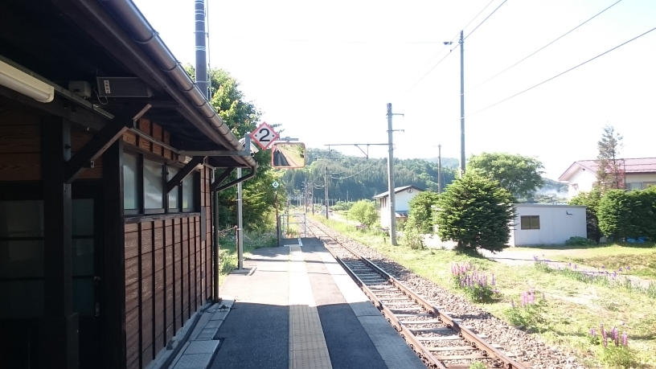
- ↑海ノ口駅2
- 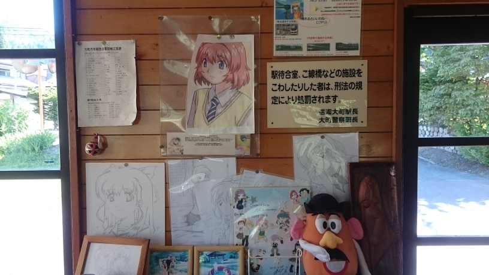
- ↑海ノ口駅 おねがい☆ティーチャー&ツインズ
約1時間45分くらいで大町に入ったは良いが，結局時間の都合上先を急ぐこととなった。白馬へと向かう途中には，前項の写真を撮影したポイントと，今回写真で紹介している仁科三湖のうちの一つ木崎湖付近に存在する駅である稲尾駅と海ノ口駅があった。実は駅はとあるアニメのファンには有名な駅であり，そのアニメを「おねがい☆ティーチャー」や「おねがい☆ツインズ」というのだが，そのアニメは，長野県大町市にある木崎湖周辺を舞台，モデルとした作品なのである。また，この作品は，このように，アニメにおける聖地という文化を生み出した初期のアニメとしても有名な作品なのである。詳しくは，アニメの欄に紹介を任せるものとして，普通に見ても，この湖は大変美しいものであり，草原が広がるなかでの無人駅というのも，大変風情あるものである。
- 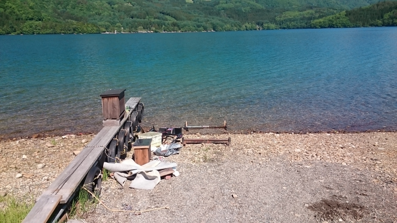
- ↑青木湖
また，より白馬に近いところには，青木湖という大変透明度の高い湖もあった。こちらも仁科三湖の一つであり，もう一つの湖は中網湖というのであるが，こちらは，他の二つに比べると面積も小さくマイナーではある。
白馬→長野
- 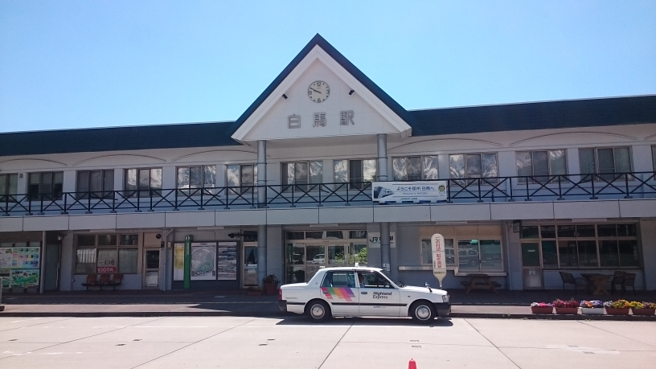
- ↑白馬駅
- 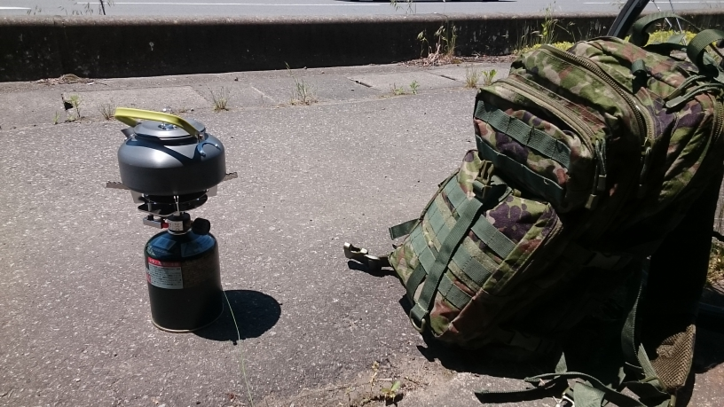
- ↑道の駅小川付近のバス停
クッカーで調理した
しばらくして，白馬に着いたのは，10:20ほどであった。途中道の駅白馬に寄ったり，電車が好きなことから白馬駅に寄ったりした。しかし，まだまだ時間上押しているため，白馬に来ても特にすることなく，すぐに出発することとなった。白馬の町について紹介しておくと，白馬はスキー場として全国的にも有名な地であり，ゲーム「かまいたちの夜」においてもその舞台となったペンションがある。詳しくはゲームの欄での紹介に任せるが，北アルプスは大変綺麗であり，静かでのどかな雰囲気の町であるから，大変良いところである。白馬駅は少々面白いものがあり，なんと，駅の広場へ出て左側には無料足湯と本棚があり，本棚に関しては，いらなくなった本を自由に交換していく目的で設けられていた。大変興味深い本もあったのだが，残念ながらいらない本は持ち合わせていなかったので交換出来なかったのだが，またいつか訪れた際には，交換してみるのも良いであろう。
白馬から長野へのルートには2種類あり，一方は国道406号を通って，戸隠のあたりを抜けていくもの。もう一方は，県道33号,31号を通って国道19号に合流していくルートだが，長野に詳しい先輩曰く，国道406号のルートは少々大変であるとのことであったので，今回は，後者のルートを選択した。その際に，白馬駅から，飯森駅まで引き返す必要があり，そこから若干上った後には，ひたすら下るだけであったため，たったの2時間程で長野までたどり着くことができた。その途中には，小川村や信州新町と呼ばれるところがあるようであり，そこにおいては，写真のようにして，カップラーメンを調理することで，エネルギー補給を行った。本来ならば，カロリーメイトのような栄養補給食品を利用することが一般的なのではあるが，少しでも値段を節約しようとの自分の意向から，私は重くはなるものの，トレーニングだと考えてサイドバッグにクッカーというアウトドア用調理用品を積み込んでいたのである。
長野→上田
- 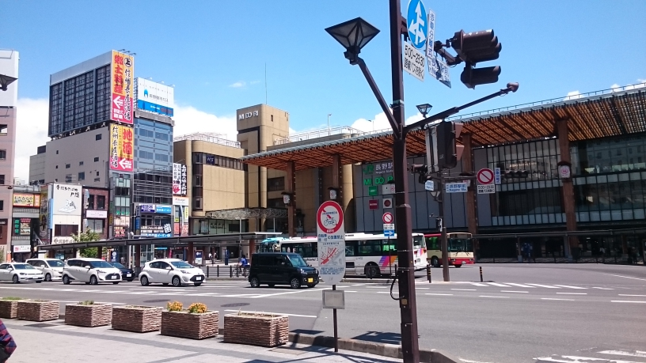
- ↑長野駅
- 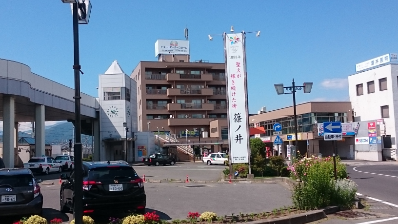
- ↑篠ノ井駅
そうして，長野にたどりついたのが，12:40くらいであった。二人ともお腹が空いていたため，駅前のラーメン屋で食べることにした。出来れば善光寺あたりを観光してみたいところではあったが，いろいろとこの先の計画を相談するうちに，体力的にも時間的にもぎりぎり上田まで行って帰って来る余裕がありそうだからと，上田に行くという挑戦を行うこととなり，さっそく13:10ほどに出発することとなった。長野市における，上田と松本の鉄道分岐点である，篠ノ井駅までは，長野駅から9kmくらい離れており，約30分で着いた。そこで，新幹線を撮影したり，休憩を挟んだ結果，篠ノ井を出発したのは，14:45くらいとなった。
篠ノ井から上田に行くためには，千曲を経由していく必要があり，千曲川の西と東と2通りのルートがあったのであるが，西側のルートを選択することにした。しかし，15:30くらいから，突然激しい雷雨が降り注ぐこととなった。必死の思いで自転車を漕ぎ続けて，なんとか戸倉温泉までたどり着き，そこで雨がやんだのであるが，コンビニの近くで足湯を行うことが出来たのも束の間再び降り注ぐこととなった。そんなこんなで上田にたどり着いたのが，17:00ほどであった。そこで撮ったのが，次の写真である。
上田→青木→松本
- 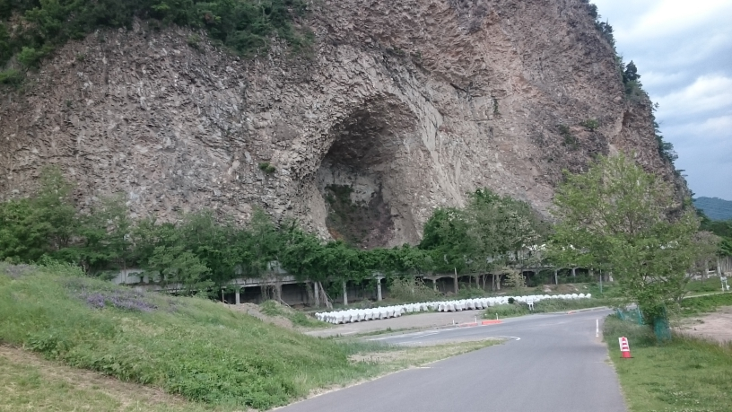
- ↑上田で撮った謎の穴の写真
上田についたのもつかの間，またしても時間が押しているため，今度は青木を経由して松本を目指すこととなった。青木を通過する際には，松本と上田の間にそびえる青木峠が障害となるのであるが，その関係上，ひたすら峠に向けて，勾配が続くようになっており，その勾配が徐々にきつくなってくるため，スピードが出ず，大変であった。そうして，青木峠に差し掛かる頃には夜の18:30くらいにはなっており，そこから長い峠をひたすら漕ぎ続けることとなった。車の通りはほとんどなく，快適ではあったが，勾配は美ヶ原ほどではないにせよ，塩尻峠ははるかに越える勾配であった。そうして，峠の頂上に着くころには20:00くらいになっており，そこからはひたすら下り続けた。途中松本の四賀と呼ばれていたのどかな集落も通過した。夜でほとんど明かりもないような場所であったが，6月付近で，カエルがよく鳴いており，特に自然を感じるような場所であった。そこから，安曇野に差し掛かった頃には，夜の21:00近くなっており，温泉に入れる時間制限に間に合うかどうかが懸念されたのであったが，今回もなんとかぎりぎりで間に合ったのである。